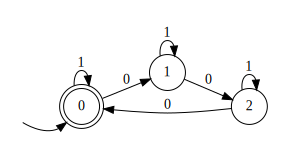

88.
Пусть \(R\) и \(S\) - языки. Докажите или опровергните, что
\((R \cup S)^* = (R^*S^*)^*\)
\[\sphericalangle w\in (R \cup S)^*
\xRightarrow{def}w=w_1w_2\ldots w_n, n\geq 0, w_j\in R \cup S
\Leftrightarrow w_j\in R \text{ или } w_j\in S\] Заметим, что
\(R=R^1S^0\subset R^*S^* \quad S=R^0S^1
\subset R^*S^*\), поэтому \(w_j\in
(R^*S^*) \Rightarrow w\in (R^*S^*)^*\)
\[\sphericalangle w\in (R^*S^*)^*
\xRightarrow{def} w=w_1w_2\ldots w_n, n\geq 0, w_j\in
R^*S^*\Rightarrow\]\[\Rightarrow
w_j=rs, r\in R^*, s\in S^* \Rightarrow\]\[\Rightarrow w_j=r_{j1}r_{j2}\ldots
r_{jm_j}s_{j1}s_{j_2}\ldots s_{jk_j}\] Итого \(w=(r_{11}r_{12}\ldots r_{1m_1}s_{11}s_{12}\ldots
s_{1k_1})(r_{21}r_{22}\ldots r_{2m_2}s_{21}s_{22}\ldots
s_{2k_2})\ldots(r_{n1}r_{n2}\ldots r_{nm_1}s_{n1}s_{n2}\ldots
s_{nk_n})\) - не более чем счётная конкатенация строк из \(R\) и \(S
\Rightarrow w\in (R \cup S)^*\)
89.
Пусть \(R\) и \(S\) - языки. Обозначим как \(RS\) язык слов, представимых в виде
конкатенации слова из \(R\) и слова из
\(S\) (в этом порядке). Докажите или
опровергните, что \((R\cup S)T=RT \cup
ST\), \((R\cap S)T=RT \cap
ST\)
\((R\cup S)T=RT \cup ST\)\[\sphericalangle w\in (R\cup S)T \Leftrightarrow
w=at, a\in R\cup S \Leftrightarrow w=\begin{cases}
rt \\
st
\end{cases} , r\in R, s\in S, t\in T\]\[\sphericalangle w\in RT \cup ST \Leftrightarrow
w=\begin{cases}
rt \\
st
\end{cases} , r\in R, s\in S, t\in T\]\[\Rightarrow(R\cup S)T=RT \cup ST \]\((R\cap S)T=RT \cap ST\)\[\sphericalangle w\in (R\cap S)T \Leftrightarrow
w=at, a\in R\cap S \Leftrightarrow a\in R \text{ и } a\in S
\Leftrightarrow w=rt \text{ и }w=st\]\[\sphericalangle w\in RT \cap ST \Leftrightarrow
w\in RT \text{ и } w\in ST \Leftrightarrow w = rt \text{ и } w =
st\]\[\Rightarrow (R\cap S)T=RT \cap
ST\]
90.
Пусть \(L\) - язык. Обозначим как \(Lc\) язык, который получается из \(L\) дописыванием в конец каждому слову
символа \(c\). Обозначим как \(Lc^{-1}\) язык, который получается из \(L\) откидыванием всех слов, которые не
заканчиваются на \(c\), а затем у
оставшихся слов откидыванием конечного символа \(c\). Докажите или опровергните, что \((Lc)c^{-1}=L\), \((Lc^{-1})c=L\)
\[\forall w\in Lc \quad w=lc, l\in
L\]\[(lc) c^{-1}=l\] Поэтому
да.
Контрпример ко второму: \(L=\{a\}, \quad
\{a\}c^{-1}=\{\} \quad \{\}c=\{c\}\)
91.
Постройте конечный автомат для языка слов над бинарным алфавитом, в
которых четность числа \(0\) равна
четности числа \(1\).
bruh
92.
Постройте конечный автомат для языка слов над бинарным алфавитом, в
которых число нулей кратно 3.

bruh
93.
Постройте конечный автомат для языка слов над бинарным алфавитом, в
которых число нулей не кратно 3. Сделайте вывод из последних двух
заданий.
bruh
Вывод: они в объединении - \(\{0,
1\}^*\). Более общее утверждение: \(A,
B\) - ДКА над алфавитом \(\Sigma\), \(A\) построен для бинарного выражения \(f\), \(B\)
для \(\neg f\), \(L(A)\cup L(B) = \Sigma^*\)
94.
Постройте конечный автомат для языка слов над бинарным алфавитом, в
которых нет трех нулей подряд.
На паре было
bruh
95.
Постройте конечный автомат для языка слов над бинарным алфавитом, в
которых есть три нуля подряд.
На паре было
bruh
96.
Постройте конечный автомат для языка слов над бинарным алфавитом,
которые представляют собой двоичную запись чисел, кратных 5
bruh
97.
Постройте конечный автомат для языка слов над бинарным алфавитом, в
которых число нулей кратно 3 и которые представляют собой двоичную
запись чисел кратных 5.
98.
Постройте конечный автомат для языка слов над бинарным алфавитом, в
которых число нулей кратно 3 или которые представляют собой двоичную
запись чисел кратных 5. Сделайте вывод из последних двух заданий.
bruh
Вывод: В 97 было прямое произведение ДКА, в 98 - объединение ДКА.
\[A\times B \leftrightarrow L(A)\cap L(B)
\quad A\cup B \leftrightarrow L(A)\cup L(B)\]
99.
Постройте конечный автомат для языка слов над бинарным алфавитом, в
которых число единиц кратно 3. Сделайте вывод.
Это 92 номер с точностью до наоборот по алфавиту.
100.
Постройте детерминированный конечный автомат для языка слов над бинарным
алфавитом, в которых второй символ с конца равен последнему
символу.